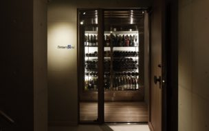

<link rel="stylesheet" href="awesome4/css/font-awesome.min.css">
<style>
article {
  width: 25%;
  border: solid 1px #ccc; 
  box-shadow: 2px 3px 5px #eee;
}

.figure{
	display: block;
	margin-block-start: 1em;
	margin-block-end: 1em;
	margin-inline-start: 40px;
	margin-inline-end: 40px;
}

a{text-decoration: none;}
img { max-width: 100%;}

.entry-content{
	position: relative;
	height:200px;
	overflow: hidden;
}

i.fa.fa-map-marker
,.endofday
{ color: #fb6868;}

i.fa.fa-gift {
    color: #FFC107;
}

.tosen_count
,address.area 
,h3.tenpo_name
,strong.genre 
{
    color: #888;
}

.entry-content{
	position: relative;
	height:200px;
	overflow: hidden;
}

h2.entry-title {
	font-size: 1em;
	line-height: 1.3;
	padding: 0 0.5em;
}
h2.entry-title h3.tenpo_name {
	font-size: 1em;
	padding: 0 0.5em;
	margin: 0;
}

i.fa.fa-instagram {
    display: block;
    font-size: 2em;
    width: 30px;
    padding-left: 1px;
    position: absolute;
    right: 0; 
  }
.attention_ico{position: absolute;}

.post-field-image{margin: 0;}

header.entry-header {
    position: relative;
}

.endofday {
    position: absolute;
    right: 5px;
    border: solid 1px;
    border-radius: 3px;
    padding-left: 5px;
}
.genre {
    border: solid 1px;
    border-radius: 3px;
    font-weight: 200;
} 
img.insta {
    position: absolute;
    right: 1px;
		bottom: 1px;
} 
</style>
<article>
		<div class="post-column">

				
			<figure class="post-field-image">
							
				
			</figure>

				
			<div class="entry-content">
							
				<header class="entry-header">
					<strong class="endofday">
						<i class="fa fa-calendar-check-o" aria-hidden="true"></i> あと 739 日
					</strong>
					
					<i class="fa fa-gift" aria-hidden="true"></i>
					<strong class="tosen_count">3名 </strong><br>
				
				 	<h2 class="entry-title">ワインとひととき写真インスタ投稿キャンペーン</h2>
				</header>

				 <address class="area">
				 	<i class="fa fa-map-marker" aria-hidden="true"></i>東京外苑前
			   </address>
		    	<h3 class="tenpo_name"> ランタンポレル l’intemporel</h3>
						
					<div class="tablink">
					 	<a href="/?genre=洋食"><strong class="genre">洋食</strong></a>
					 	<a href="/?genre=フレンチ"><strong class="genre">フレンチ</strong></a>
					 	<a href="https://www.instagram.com/restaurant_lintemporel/" target="blank">
					 	</a>				 
					</div>
					
			</div><!-- end .entry-content -->
			
	</div>	<!-- end .post-column -->
</article>